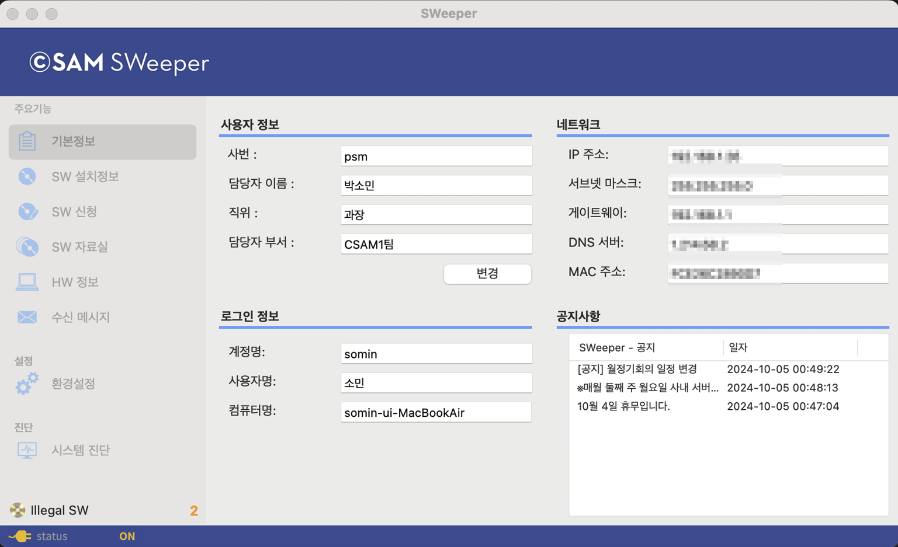
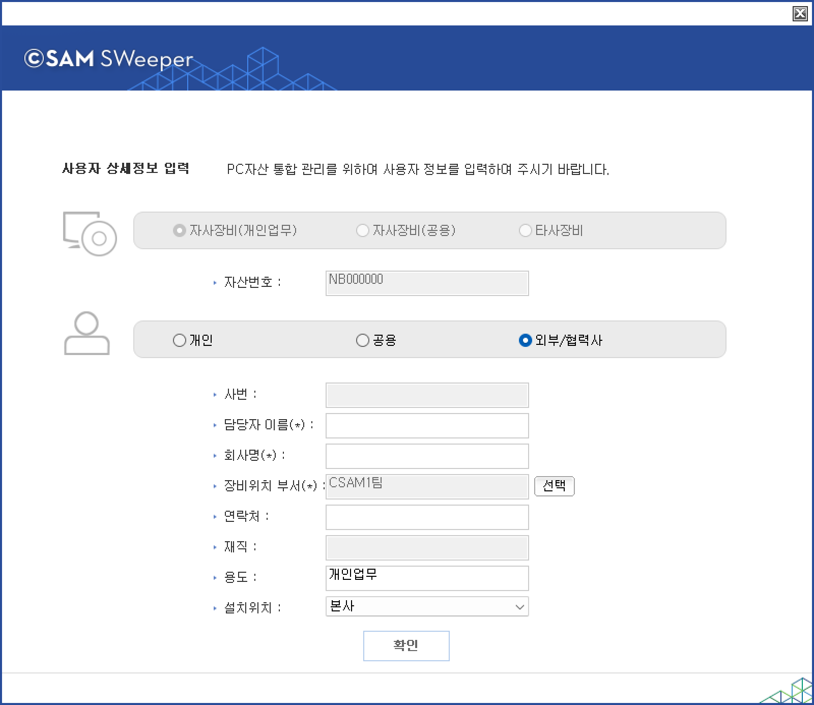

11-3-1-1. 기본정보
11-3-1-1. 기본정보
Source: https://www.sweeper.or.kr/etc/manual/11-3-1-1.html
11-3-1-1. 기본정보
11. CLIENT UI(AGENT) ›› 11-3. 사용자 UI ›› 11-3-1. 장비정보 ››


SWeeper Agent를 실행하면 보여지는 화면으로 사용중인 장비의 사용자,네트워크,로그인,공지사항 등의 정보를 제공 합니다.
기본정보
SWeeper Agent를 실행시, 처음 보여지는 화면으로, 사용자 PC의 사용자 정보와 네트워크 정보, 공지사항등이 보여집니다.
(위 : Windows Agent, 아래 : Mac Agent)


-
사용자 정보
-
변경 버튼을 누르면 사용자 정보입력 팝업창이 실행되어, 해당 PC 사용자 변경이 가능합니다.
-
로그인 정보
-
사용자 PC에 로그인 한 계정명과 권한이 나타납니다.
-
네트워크
-
사용자 PC의 네트워크 정보를 확인할 수 있습니다.
-
공지사항
-
관리자의 공지사항을 확인할 수 있습니다.
사용자 정보 입력
위 사용자 정보 하단의 "변경" 버튼을 누르거나, 관리자 명령에 의해 사용자 정보입력이 요청되었을 경우 아래와 같은 팝업창이 나타납니다.
(좌측 : Windows Agent, 우측 : Mac Agent)
-
개인
-
장비가 개인에게 지급된 업무용 PC(노트북 등)인 경우, 선택하여 본인의 사번을 조회하여 입력합니다.


-
공용
-
장비가 개인이 아닌 공용으로 사용되는 PC(노트북 등)인 경우, 선택하여 해당장비가 위치한 "부서"와 용도를 입력합니다.


-
외부/협력사
-
장비가 외부협력사인 경우 선택하여 입력합니다.
- 

참고사항
- (*) 표시된 것은 필수 입력 컬럼입니다.
-
사용자가 정보를 변경할 수 없도록 할 수 있습니다. (설정 방법은 엔지니어에게 문의 바랍니다.)
-
버튼을 비활성화 할 경우
-
사용자가 정보 변경 불가 (확인 버튼 비활성화)

-

-
옵션 설정 여부와 상관없이 '사용자 정보 요청' 명령을 내렸을 때는 사용자가 변경 가능합니다.
© Copyright SWeeper Inc.. All Rights Reserved